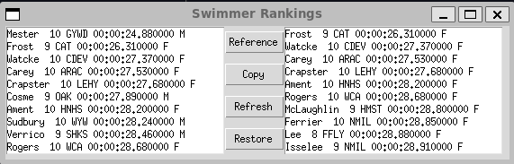

---
title: "The Prototype Pattern"
---
classDiagram
class Client
class Prototype {
<<interface>>
+clone() Prototype
}
class ConcretePrototype
Client --> Prototype : consumes
ConcretePrototype --|> Prototype : implements
Chapter 10: The Prototype Pattern
Notes
- The Prototype Pattern is used when object creation is expensive or complex
- Rather than building new instances from scratch, a copy is made from an existing instance
- These copies can then be further modified as required
- For example, consider a database in which multiple queries must be made to create an answer
- This might produce a table or results as some object
- Rather than recreating this table for each subsequent analysis we might want to operate on copies of this original query
- As a concrete example consider a database of swimmers in a swimming league over a season
- Each swimmer swims several strokes and distances
- Best times are tabulated by age group
- Swimmers may have birthdays and move age groups within a season
- Determining the best swimmer in an age group in a season depends on a combination of the dates of each meet and a swimmer’s birthday
- Expensive to compute this query
- Once constructed we may want to further analyse this table or present it in different sorted orders
- We don’t want to destroy the original data order or recompute the query each time
Cloning in Python
Python provides the
copymodule for creating copies of objects, there are three main functionscopy- Returns a shallow copy of an object
deepcopy- Returns a deep copy of an object
replace- Creates a new object of the same type as object replacing fields with values from changes
A shallow copy creates a new copy of the object, but not strictly any objects it references
A deep copy creates a new copy of the object and any object it references
Using a Prototype
- We’ll create an example program
- Here we read data in from Swimmers.txt to simulate the data returned by a database query
- The UML roughly looks like below
- We take the liberty of treating
Swimmersas a class, when it is really just a list to emphasise the point- Here the role of the
clonefunction is replaced by callingsortedon the list instance
- Here the role of the
- We take the liberty of treating
---
title: "The Prototype Pattern in our Swimmer Ranking"
---
classDiagram
class UIBuilder {
+Swimmers swimmers
}
class Swimmers {
+list~Swimmer~ swimmers
}
class Swimmer {
+String first_name
+String last_name
+int age
+String club
+time seed_time
+Sex sex
+name() String
+stringify() String
}
UIBuilder *-- Swimmers : clones
Swimmers o-- Swimmer
The Swimmer Class
- We can reuse the
Swimmerclass from Chapter 6- We make some modifications to remove the
heatandlaneand add in asexparameter - We also need to change how we parse the name
- We make some modifications to remove the
- We’ll create specialised parse functions for the name and sex
parse_namedef parse_name(name: str) -> tuple[str, str]: """ Parse a name into first and last name components Assumes the name is formatted as `"first last"` Parameters ---------- name : str Name to be parsed Returns ------- tuple[str, str] first, and last name components """ first_name, _, last_name = name.partition(" ") first_name = first_name.strip() last_name = last_name.strip() return first_name, last_nameparse_sexfrom typing import Literal type Sex = Literal["M"] | Literal["F"] | Literal["U"] def parse_sex(raw_sex: str) -> Sex: """ Parse a string into a Sex Parameters ---------- raw_sex : str string representing the string to be parsed Returns ------- Sex The provided sex Raises ------ ValueError raised if `sex` could not be converted to a `Sex` """ raw_sex = raw_sex.upper() if raw_sex not in ["M", "F", "U"]: raise ValueError( "invalid sex encountered {sex}, accepted values are 'M', 'F', 'U' and lowercase equivalent" ) else: sex: Sex = raw_sex # ty:ignore[invalid-assignment] previous check ensures, value is M, F or U return sex
- Now we need to update the
SwimmerclassThis includes modifying,
The
from_stringclass method- This needs to be updated to handle the new
parse_namefunctionality - Further updates to handle the new
parse_sex - Otherwise it’s mostly the same
- This needs to be updated to handle the new
The
__init__method- Reflects the updated attributes, namely the removal addition of the
sexattribute and removal ofheatandlane
- Reflects the updated attributes, namely the removal addition of the
__str__We’ll add this method to simplify converting instances to a string later
It displays the time either as
%M:%S.%for%M:%S.%fbut cut down to milliseconds instead of microsecondsdef __str__(self) -> str: """ Create a space-delimited string representation of the swimmer The string is delimited as, [first name][last name][age][club][seed time][sex] Returns ------- str the space-delimited string """ if self.seed_time.minute: formatted_time = self.seed_time.strftime("%M:%S.%f")[:-3] else: formatted_time = self.seed_time.strftime("%S.%f")[:-3] return f"{self.name} {self.age} {self.club} {formatted_time} {self.sex}"
The Prototype Program
- We then build a simple program to display the idea
- The swimmer data is loaded and stored in
self.swimmersin ourUIBuilderclass
- The swimmer data is loaded and stored in
- It consists of a left and right listbox and a central display of buttons
The left listbox contains the contains the data loaded in from text file
Refreshrefreshes the data in the left box with the current value ofself.swimmersRestorereloads the data intoself.swimmersfrom the disk and updates the left listboxTwo buttons
ReferenceandCopytransfer data to the right listboxReferenceupdates the right box by using name binding to make a new variableswimmerrefer to the same list asself.swimmersCalling
.sortthen sorts the list in-placeThis means that the sort is reflected in both
swimmersandself.swimmersThis is not what we want when using the prototype pattern
def reference() -> None: """ Perform reference binding and sort, then update the displayed right-hand list """ swimmers = self.swimmers swimmers.sort(key=lambda x: x.sex) self.fill_list(self.right_list, swimmers) reference_button = tk.ttk.Button(self.root, text="Reference", command=reference) reference_button.grid(row=0, column=1)
Copyupdates the right box by callingsortedonself.swimmers- Rather than sorting in-place this returns a sorted copy, which is what we want
def copy() -> None: """ Copy the swimmers list using `sorted` then update the displayed right-hand list """ swimmers = sorted(self.swimmers, key=lambda x: x.sex) self.fill_list(self.right_list, swimmers) copy_button = tk.ttk.Button(self.root, text="Copy", command=copy) copy_button.grid(row=1, column=1)
- The full program can be found in swim_database.py
It should produce a program that looks similar to below

We can copy our prototype data on the left to the right, and manipulate it without changing the original. Here it is sorted differently
Summary
- The Prototype pattern lets you add or remove class instances as required at runtime by cloning the original instance
- These cloned variations can be modified independent of the original prototype
- Prototypes can also be paired with a registry like the Singleton Pattern to provide a single global access point
- The downside to using the prototype pattern is that the initial prototype objects need to be created up front even if they are not used
- In python this can result in additional cost predominately at start-up or module import time
- Prototype classes need to be sufficiently accessible to change in order to support the pattern
- If you have no access to the data or methods that enable change you cannot make the copy distinct from the original prototype